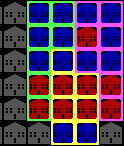
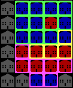

The purpose of this plan is to secure an election despite not winning the
popular vote. This can be accomplished through creative districting of the cities
which make up our great state.
HOW ELECTIONS WORK:
A common misconception held by both the citizens of Roosylvania as well as nation
in general is that the winner of an election is simply the candidate that
receives the most votes.
The reality is that each city in our state is broken up into various electoral
districts. In each district, voters choose between the Red party and the Blue
party. The votes for a district are tallied and one point is given to the
party that wins. Whichever party wins the most districts in a city wins the
city. Whichever party wins the most cities, wins the election.
STILL CONFUSED?
Say we have a city with 3 districts. The first district has 50 votes for blue
and 20 votes for red. The second district has 40 votes for red and 30 votes for
blue. The third district has 50 votes for blue and 30 votes for red.
It looks something like this:

Looking at the districts, you can see the first district goes to blue, the
second goes to red, and the third goes to blue. The end result is a 2-1 victory
for blue.
SO WHAT'S MY ROLE IN ALL THIS?
As the Chairman of Electoral Affairs for Roosylvania, YOU are the one tasked
with defining the shape and size of these districts. Your job is to creatively
define electoral districts in such a way to give the Red party the edge it needs
to remain victorious in the upcoming election, like so:

Now, in this scenario, the first district has gone from blue to red, the second
from red to blue, and the third district from blue to red. Despite an identical
popular vote, blue has now won the election.